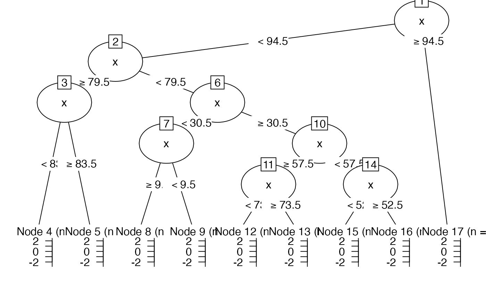

Use recursive partitioning function (rpart to perform a 'classification' of relatively stable levels in a timeseries.
ts_levels( y, minDataSplit = 12, minLevelDuration = round(minDataSplit/3), changeSensitivity = 0.01, maxLevels = 30, method = c("anova", "poisson", "class", "exp")[1], minChange = sd(y, na.rm = TRUE), doLevelPlot = FALSE, doTreePlot = FALSE )
Arguments
| y | A time series of numeric vector |
|---|---|
| minDataSplit | An integer indicating how many datapoints should be in a segment before it will be analysed for presence of a level change (default = |
| minLevelDuration | Minimum duration (number of datapoint) of a level (default = |
| changeSensitivity | A number indicating a criterion of change that must occur before declaring a new level. Higher numbers indicate higher levels of change must occur before a new level is considered. For example, if |
| maxLevels | Maximum number of levels in one series (default = |
| method | The partitioning method to use, see the manual pages of rpart for details. |
| minChange | After the call to rpart, adjust detected level changes to a minimum absolute change in |
| doLevelPlot | Should a plot with the original series and the levels be produced? (default = |
| doTreePlot | Should a plot of the decision tree be produced. This requires package partykit (default = |
Value
A list object with fields tree and pred. The latter is a data frame with columns x (time), y (the variable of interest) and p the predicted levels in y.
See also
Other Time series operations:
ts_center(),
ts_changeindex(),
ts_checkfix(),
ts_detrend(),
ts_diff(),
ts_discrete(),
ts_duration(),
ts_embed(),
ts_integrate(),
ts_peaks(),
ts_permtest_block(),
ts_permtest_transmat(),
ts_rasterize(),
ts_sd(),
ts_slice(),
ts_standardise(),
ts_sumorder(),
ts_symbolic(),
ts_trimfill(),
ts_windower()
Author
Fred Hasselman
Examples
# Levels in white noise? set.seed(4321) y <- rnorm(100) wn <- ts_levels(y) plot(wn$pred$x,wn$pred$y, type = "l")# This is due to the default changeSensitivity of 0.01 wn2 <- ts_levels(y,changeSensitivity = .1) lines(wn2$pred$p, col = "steelblue", lwd = 2)# Plot the tree ts_levels(y, doTreePlot = TRUE)#> $tree #> n= 100 #> #> node), split, n, deviance, yval #> * denotes terminal node #> #> 1) root 100 82.028770 0.1250673000 #> 2) x< 94.5 94 71.110980 0.0878417200 #> 4) x>=79.5 15 19.893460 -0.3016653000 #> 8) x< 83.5 4 5.248182 -0.6953470000 * #> 9) x>=83.5 11 13.799900 -0.1585084000 * #> 5) x< 79.5 79 48.509690 0.1617988000 #> 10) x< 30.5 30 20.964550 -0.0418458400 #> 20) x>=9.5 21 14.199180 -0.2278396000 * #> 21) x< 9.5 9 4.343805 0.3921396000 * #> 11) x>=30.5 49 25.539290 0.2864791000 #> 22) x>=57.5 22 8.885023 0.0002798885 #> 44) x< 73.5 16 6.635561 -0.1221814000 * #> 45) x>=73.5 6 1.369652 0.3268432000 * #> 23) x< 57.5 27 13.383940 0.5196785000 #> 46) x< 52.5 22 7.512994 0.3440948000 * #> 47) x>=52.5 5 2.208379 1.2922470000 * #> 3) x>=94.5 6 8.746784 0.7082686000 * #> #> $pred #> x y p #> 1 1 -0.426757383 0.3921396 #> 2 2 -0.223611820 0.3921396 #> 3 3 0.717606789 0.3921396 #> 4 4 0.841445668 0.3921396 #> 5 5 -0.128357274 0.3921396 #> 6 6 1.609347208 0.3921396 #> 7 7 -0.297167451 0.3921396 #> 8 8 0.196004648 0.3921396 #> 9 9 1.240746202 0.3921396 #> 10 10 -0.718698154 -0.2278396 #> 11 11 -0.067236319 -0.2278396 #> 12 12 0.344367097 -0.2278396 #> 13 13 -1.260985237 -0.2278396 #> 14 14 1.139464085 -0.2278396 #> 15 15 -1.221781923 -0.2278396 #> 16 16 1.573315888 -0.2278396 #> 17 17 0.073477874 -0.2278396 #> 18 18 -1.175115087 -0.2278396 #> 19 19 -1.588261899 -0.2278396 #> 20 20 -0.747380729 -0.2278396 #> 21 21 0.483521864 -0.2278396 #> 22 22 -0.003025539 -0.2278396 #> 23 23 -0.008930402 -0.2278396 #> 24 24 0.593357619 -0.2278396 #> 25 25 -0.099202081 -0.2278396 #> 26 26 -0.238034248 -0.2278396 #> 27 27 0.047782659 -0.2278396 #> 28 28 0.296512738 -0.2278396 #> 29 29 -0.833809917 -0.2278396 #> 30 30 -1.373969996 -0.2278396 #> 31 31 0.140278953 0.3440948 #> 32 32 0.662125963 0.3440948 #> 33 33 1.131039665 0.3440948 #> 34 34 -0.475112022 0.3440948 #> 35 35 0.852414112 0.3440948 #> 36 36 -0.751518846 0.3440948 #> 37 37 -0.175666196 0.3440948 #> 38 38 0.751964427 0.3440948 #> 39 39 0.237210903 0.3440948 #> 40 40 1.267496343 0.3440948 #> 41 41 -0.146795684 0.3440948 #> 42 42 1.183290044 0.3440948 #> 43 43 0.419156068 0.3440948 #> 44 44 -0.771038353 0.3440948 #> 45 45 0.714527695 0.3440948 #> 46 46 0.100105215 0.3440948 #> 47 47 1.037409171 0.3440948 #> 48 48 0.842398254 0.3440948 #> 49 49 0.090360450 0.3440948 #> 50 50 0.019725712 0.3440948 #> 51 51 0.230992722 0.3440948 #> 52 52 0.209720171 0.3440948 #> 53 53 1.474832991 1.2922470 #> 54 54 2.080248162 1.2922470 #> 55 55 0.148414165 1.2922470 #> 56 56 1.718527577 1.2922470 #> 57 57 1.039212164 1.2922470 #> 58 58 -1.181603866 -0.1221814 #> 59 59 1.028431193 -0.1221814 #> 60 60 0.046477166 -0.1221814 #> 61 61 -0.124223622 -0.1221814 #> 62 62 -0.019105983 -0.1221814 #> 63 63 -0.529369588 -0.1221814 #> 64 64 0.823488205 -0.1221814 #> 65 65 -0.094906597 -0.1221814 #> 66 66 -0.419654278 -0.1221814 #> 67 67 -0.779163164 -0.1221814 #> 68 68 0.048157028 -0.1221814 #> 69 69 0.214547154 -0.1221814 #> 70 70 0.182745073 -0.1221814 #> 71 71 0.729064913 -0.1221814 #> 72 72 -1.308636074 -0.1221814 #> 73 73 -0.571149276 -0.1221814 #> 74 74 0.764100497 0.3268432 #> 75 75 0.926926993 0.3268432 #> 76 76 -0.551907906 0.3268432 #> 77 77 0.202618852 0.3268432 #> 78 78 0.432404231 0.3268432 #> 79 79 0.186916594 0.3268432 #> 80 80 -0.927368186 -0.6953470 #> 81 81 -2.450016257 -0.6953470 #> 82 82 0.564470520 -0.6953470 #> 83 83 0.031525945 -0.6953470 #> 84 84 1.867515223 -0.1585084 #> 85 85 -2.439320455 -0.1585084 #> 86 86 0.585280267 -0.1585084 #> 87 87 1.245953274 -0.1585084 #> 88 88 -1.071689207 -0.1585084 #> 89 89 -0.342792887 -0.1585084 #> 90 90 0.042843344 -0.1585084 #> 91 91 -0.587783610 -0.1585084 #> 92 92 -1.039416308 -0.1585084 #> 93 93 0.155512893 -0.1585084 #> 94 94 -0.159694787 -0.1585084 #> 95 95 1.856492676 0.7082686 #> 96 96 1.308703563 0.7082686 #> 97 97 -1.620196371 0.7082686 #> 98 98 1.689408794 0.7082686 #> 99 99 -0.041453761 0.7082686 #> 100 100 1.056656477 0.7082686 #>